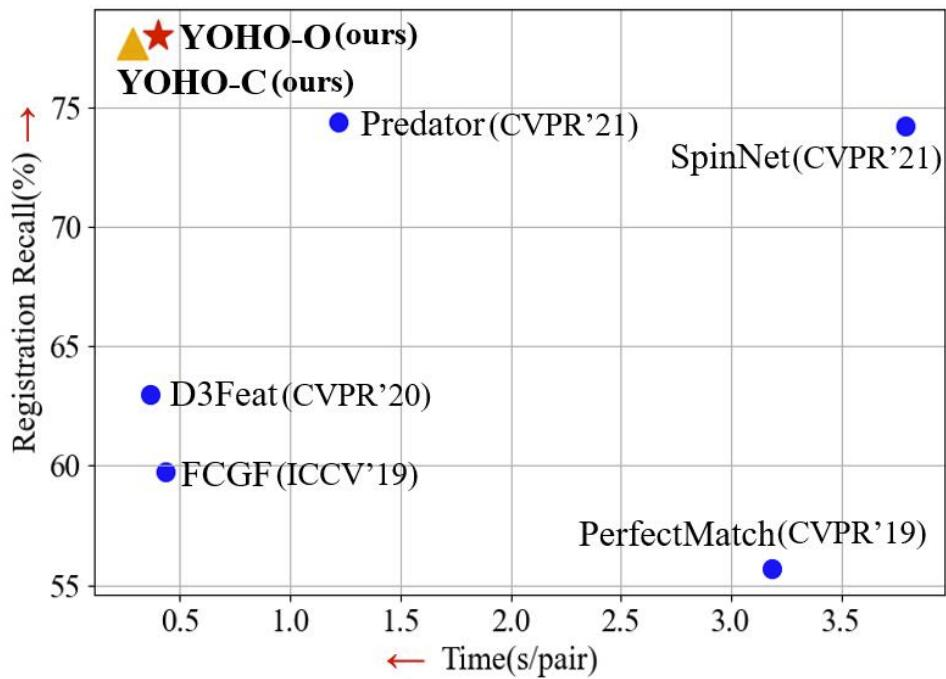

Abstract
In this paper, we propose a novel local descriptor-based framework, called You Only Hypothesize Once (YOHO), for the registration of two unaligned point clouds. In contrast to most existing local descriptors which rely on a fragile local reference frame to gain rotation invariance, the proposed descriptor achieves the rotation invariance by recent technologies of group equivariant feature learning, which brings more robustness to point density and noise. Meanwhile, the descriptor in YOHO also has a rotation equivariant part, which enables us to estimate the registration from just one correspondence hypothesis. Such property reduces the searching space for feasible transformations, thus greatly improves both the accuracy and the efficiency of YOHO. Extensive experiments show that YOHO achieves superior performances with much fewer needed RANSAC iterations on four widely-used datasets, the 3DMatch/3DLoMatch datasets, the ETH dataset and the WHU-TLS dataset.
Network Structure

Quantative Results

Qualitative Results

How fast YOHO is to find a ground truth transformation?